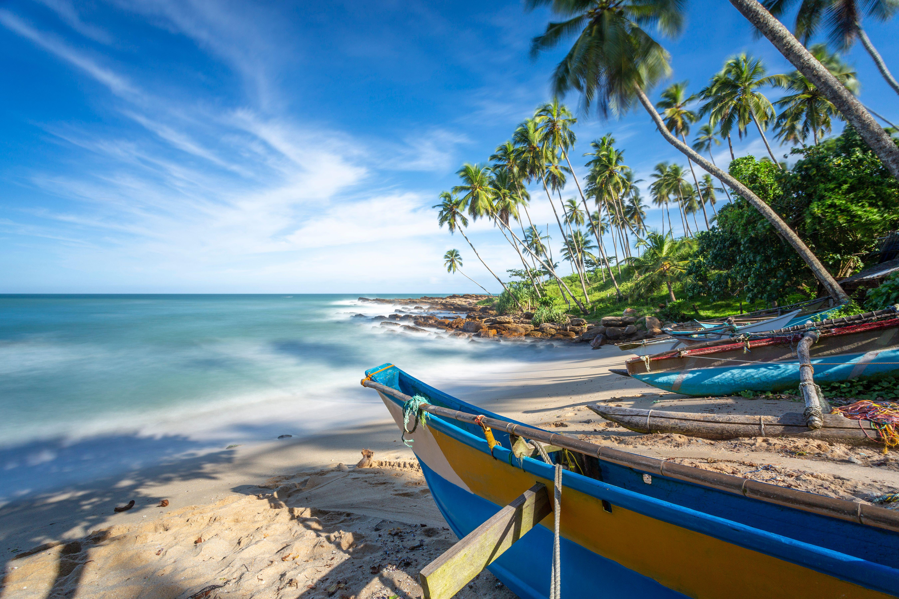
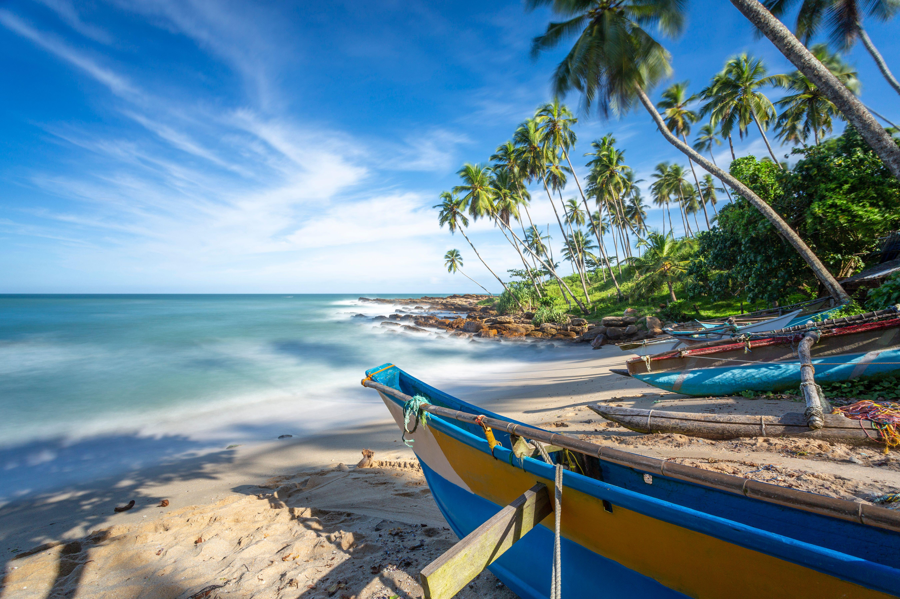

This island nation in the Indian Ocean has so many ridiculously perfect beaches it is hard to know where to start. Read our guide to narrow down the choice and find your ideal match — whether you want a deserted slither of sand with no one else around; sociable spaces with restaurants and bars on the shore; or to get active with options to surf and whale-watch.
Mirissa
Mirissa beach would have claim enough to feature on your itinerary, with a host of restaurants ready to bring a cold
beer to your hammock or a barbecued lobster to tables set up on the golden sand. Factor in its offshore visitors and
a stay here becomes pretty much compulsory. In February and March blue whales migrate along the coast, and plenty of
whale-watching trips depart from here to see them.
Nilaveli
The small beach resort of Nilaveli is an excellent place to escape to for a few days, with a broad stretch of white
sand lapped by turquoise waters, and a few low-key amenities. It all feels blissfully unspoilt. A prime reason to
make the journey here is to take boat trips out to Pigeon Island National Park, with the chance to dive and snorkel
among turtles and 300 species of fish over its coral reef.